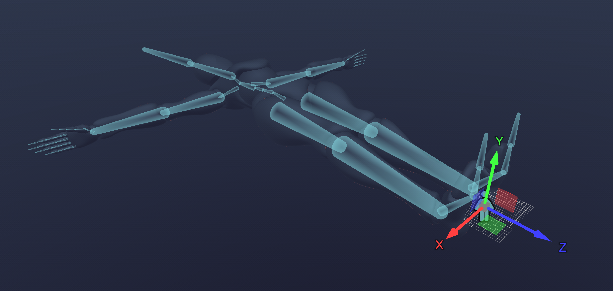
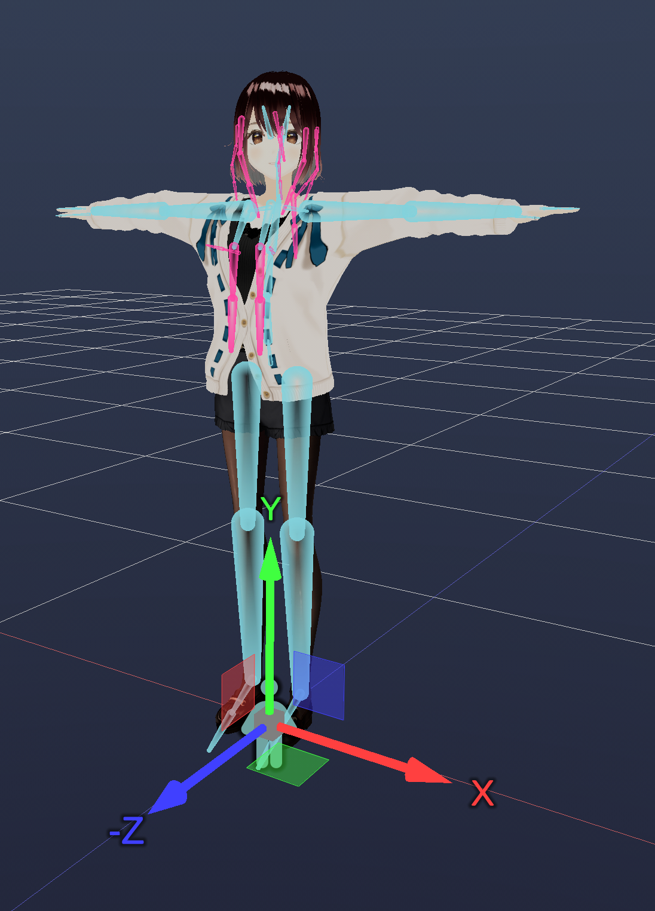
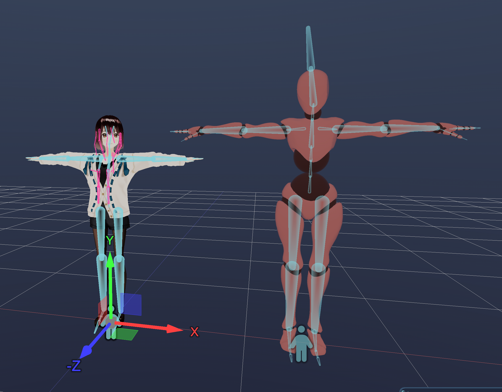
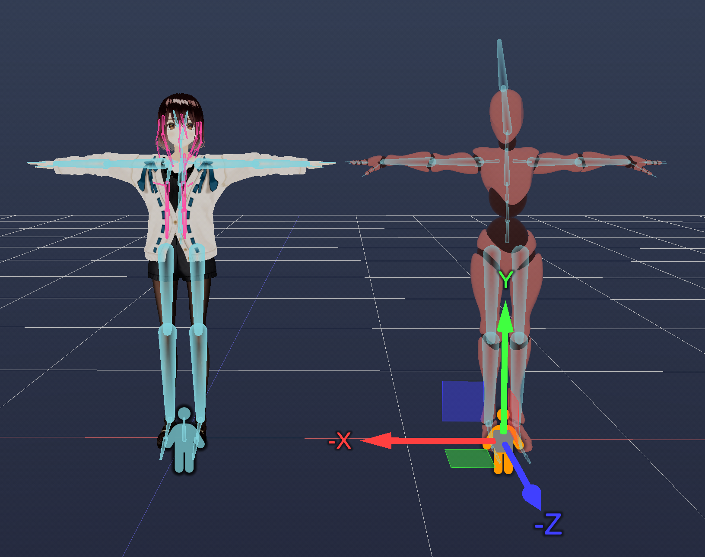

Animation Retargeting
I recently implemented animation retargeting, something that’s not frequently discussed on the internet in detail. My goal was specifically to copy animations between similar types of skeletons: humanoid to humanoid. A more complicated solution for example, that can retarget humanoid animation to a frog was not my intention.
Animation basics
To start with implementing something like this, you should already have a working animation system in your program. I build upon an animation system that is based on the GLTF 2.0 specification. An animation is built from these parts:
- Target entity: an entity identifier which the animation modifies
- Keyframe times: a list of times, one time for every keyframe
- Keyframe data: a list of datas, one data for every keyframe. The implementation stores an array of floats, and uses a different stride to access them based on target path type.
- Target path: describes what kind if data the animation modifies. This can be anything in the engine, like locations, light color, sound volume, but for the sake of the retargeting, I'll focus on three path types: scale, rotation, translation
For scale and translation, the keyframe data contains 3 floats for every keyframe (3D vectors), for rotation it contains 4 floats for every keyframe (quaternions). These 3D vectors and quaternions describe transformation in local space. We are always working in either local space or world world space:
- World space: This is simply the final coordinate space, where we see our transformations on the screen end up.
- Local space: It is the same as world space if the entity doesn't have a parent. If it has a parent, then it is relative to the parent's world space transform (as if the parent transform was the origin of the coordinate system).
It is important that all animation data describes transformations in local space, because it allows only a subset of entities being animated, while the parenting system will handle updating children to follow the parent.
Humanoid
I mentioned that animation retargeting needs to support copying animations between humanoid skeletons. A skeleton in this context, is a hierarchy of transformations, where each transformation is stored in local space, and can have a single parent transformation (or none). A humanoid skeleton is a skeleton, in which some transformation follow a convention, we can call these conventions "bones". The implementation of a humanoid is simply a table that maps a humanoid-like bone name to a regular transform ID that our engine works with. For example:
enum HumanoidBone
{
Hips,
Spine,
Chest,
...
Count
};
Entity bones[HumanoidBone::Count];The "Entity" is an identifier that can uniquely identify a Transform, so the above code means, that for each humanoid bone, we can say which Transform it maps to.
This will be used in retargeting to move animations from one skeleton to another one. If we don't use a humanoid structure like this, we could also use string matching for example based on names, or some logical comparison of skeletons, which are out of scope for now.
In Wicked Engine, if you use the GLTF loader to import a model, it will automatically generate a humanoid bone mapping if applicable. Currently this will be done if it finds a VRM_humanoid or VRMC_vrm_humanoid extensions, or "mixamorig:" naming convention while iterating skeletons.
To see a good specification for humanoid bone mapping, take a look at the VRM spec.
Retargeting
The simplest form of retargeting requires the following steps:
- User specifies source animation and target humanoid.
- For each source animation target entity, find its source humanoid, and the source humanoid bone type. If it's not found, skip this entity
- Look up the entity in the target humanoid, based on the source bone type
- Change the target entity in the animation-copy to the new target
If the skeletons were very similar, congratulations, the retargeted animation is already usable. But I want to handle skeletons that come from different packages (Mixamo vs. VRM for example), an unfortunately the animations are recorded for very differently scaled and oriented skeletons:


If we just blindly copy the keyframe data from the Mixamo rig to the VRM rig, the VRM model will be blown out of proportions. However, I cheated a bit on the Mixamo rig's picture, because I deleted the skeleton's parent transformation to indicate what scale the animations are recorded in. If both are properly positioned in world space, they are not so different:

The skeletons are still not completely similar, because the proportions, height are different, but this is enough to work with. For potentially better results, the source skeleton could be scaled down if needed.
So, what is happening here is the following: the two skeletons look similar in world space, but their local space is very different. Thus we will just work in world space and map animation differences from source to target. Then finally, we down-convert from target's world space to local space to let the animation system work without any changes.
We will need to go through each keyframe in the target animation (after it was copied from source animation already) and do the following pseudo-code:
Entity bone_source; // identifier of source bone entity (should be in T-pose)
Entity bone_dest; // identifier of target bone entity (should be in T-pose)
Transform transform_source = GetTransform(bone_source);
Transform transform_dest = GetTransform(bone_dest);
Matrix bindMatrix = ComputeWorldMatrixRecursive(bone_source, transform_source.GetLocalMatrix());
Matrix inverseBindMatrix = MatrixInverse(bindMatrix);
Matrix targetMatrix = ComputeWorldMatrixRecursive(bone_dest, transform_dest.GetLocalMatrix());
Matrix inverseParentMatrix = ComputeInverseParentMatrixRecursive(bone_dest);
switch(target_path)
{
case PATH_SCALE:
for(Vector3& data : target_animation.keyframe_datas)
{
Transform transform = transform_source;
transform.scale_local = data; // temporary update transform with animation data (T-pose to animated, local space)
Matrix localMatrix = inverseBindMatrix * ComputeWorldMatrixRecursive(bone_source, transform.GetLocalMatrix();
localMatrix = targetMatrix * localMatrix * inverseParentMatrix;
Vector S,R,T;
MatrixDecompose(S,R,T, localMatrix);
data = S; // update scale animation data with retargeted value
}
break;
case PATH_ROTATION:
for(Quaternion& data : target_animation.keyframe_datas)
{
Transform transform = transform_source;
transform.rotation_local = data; // temporary update transform with animation data (T-pose to animated, local space)
Matrix localMatrix = inverseBindMatrix * ComputeWorldMatrixRecursive(bone_source, transform.GetLocalMatrix();
localMatrix = targetMatrix * localMatrix * inverseParentMatrix;
Vector S,R,T;
MatrixDecompose(S,R,T, localMatrix);
data = R; // update rotation animation data with retargeted value
}
break;
case PATH_TRANSLATION:
for(Vector3& data : target_animation.keyframe_datas)
{
Transform transform = transform_source;
transform.translation_local = data; // temporary update transform with animation data (T-pose to animated, local space)
Matrix localMatrix = inverseBindMatrix * ComputeWorldMatrixRecursive(bone_source, transform.GetLocalMatrix();
localMatrix = targetMatrix * localMatrix * inverseParentMatrix;
Vector S,R,T;
MatrixDecompose(S,R,T, localMatrix);
data = T; // update translation animation data with retargeted value
}
break;
}So what is happening? First we create the inverseBindMatrix, this is the inverse of the source bone's T-Pose world matrix. This is used to compute source animation's difference to T-Pose in world space. The targetMatrix is the target bone's world matrix in T-pose. The source animation difference can be applied on top of it, which results in target animation's world space. The inverseParentMatrix is computed as the inverse of the target bone's parent's world matrix (in T-pose). It is used at the end to move the target animation's world space back to target's local space. Target animation local space can be used by the animation system as any other animation.
The switch-case is shown because in the scale-rotation-translation keyframes are handled independently of each other. The idea of that part is that for each keyframe, we create a temporary transform that is equal to the source transform (transforms are always stored in local space). Then we update its scale/rotation/translation with the animation keyframe data. That local space transform is transformed into world space and a difference is computed to the source T-pose using the inverseBindMatrix. The difference is applied to the target world space, and down-converted back into target's local space. The retargeted keyframe data is stored in local space.
Note that a lot of "recursive" matrix compute functions are used in my implementation (they are implemented with loops instead recursion, but that's not the point). I use recursive recomputation from local to world space because this way the other procedural animations that were applied to skeletons at runtime won't interfere, so I simply get back the T-pose world matrices. If you have world matrices for T-pose already available, feel free to just use them as-is. For the sake of completeness, here is pseudo-code for recursive matrix computations:
Matrix ComputeWorldMatrixRecursive(Entity entity, Matrix localMatrix)
{
Entity parentID = GetParent(entity);
while(parentID != INVALID_ENTITY)
{
Transform transform_parent = GetTransform(parentID);
localMatrix *= transform_parent.GetLocalMatrix();
parentID = GetParent(parentID);
}
return localMatrix;
}
Matrix ComputeInverseParentMatrixRecursive(Entity entity)
{
Matrix inverseParentMatrix = IdentityMatrix();
Entity parentID = GetParent(entity);
if(parentID != INVALID_ENTITY)
{
while(parentID != INVALID_ENTITY)
{
Transform transform_parent = GetTransform(parentID);
inverseParentMatrix *= transform_parent.GetLocalMatrix();
parentID = GetParent(parentID);
}
inverseParentMatrix = MatrixInverse(inverseParentMatrix);
}
return inverseParentMatrix;
}Oh, and I should state what the Transform's GetLocalMatrix is doing, too:
struct Transform
{
Vector3 scale_local;
Quaternion rotation_local;
Vector3 translation_local;
Matrix GetLocalMatrix()
{
return
MatrixScaling(scale_local) *
MatrixRotationQuaternion(rotation_local) *
MatrixTranslation(translation_local);
}
}You see, the retargeting like this is not overly complicated, but it did take me several hot showers figuring out this solution that seems to work really well. Once you have a grasp on how the algorithm works, it can still be a significant headache to fit the matrix multiplication order into the math library you are using. I was using the DirectXMath library, which has row major matrices, knowing this fact may help you.
If you are curious about implementation of matrix utility functions such as MatrixInverse and MatrixDecompose, check them out in the DirectXMath library, where they are named XMMatrixInverse(), and XMMatrixDecompose(). I won't describe them here. Compared to my pseudo-code, the DirectXMath library also uses XMMATRIX type instead of Matrix, and XMVECTOR type compared to Vector and Quaternion pseudo-types.
Because we are working largely within world space, you are free to stretch and squish the source skeleton if you want to better match the target skeleton, this could potentially result in better fitting animations:

This is it for the basics of retargeting. To recap, we retarget by comparing the source and target skeletons in world space - which is what you see on screen, so you can avoid transferring animations with huge differences. Only as the last step we move the animation back to local space.
Runtime retargeting
This type of retargeting I shown is an "offline" retargeting, so it makes animation copies, but no changes needed to the existing animation system. It was purely implemented right now on the editor side, no engine changes. On the other side, you could also develop a runtime retargeting solution, which would be a constantly running system on top of your regular animation system, but it would not require making copies of existing animation data. That way, your source animation would be a single animation, and all other humanoid skeletons could compute their current pose every frame based on that. Perhaps that would be worth to have in the engine as well.
Besides runtime retargeting, the humanoid rig can also assist you with some procedural modifications to the animations. For example, foot and leg spacing logic can be implemented atop Leg and Arm bone types with a little effort, to help copying animations between skinny/fat character rigs.
Thanks for reading!